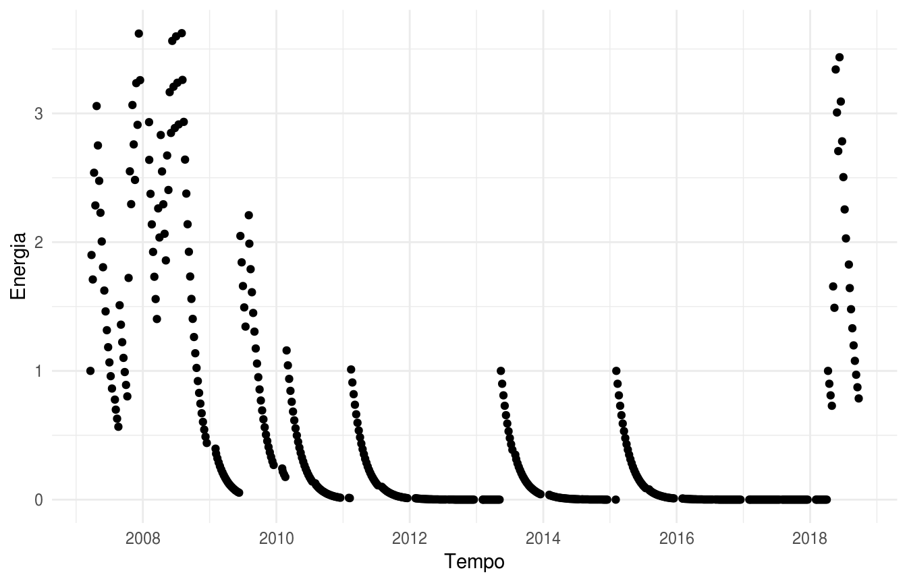
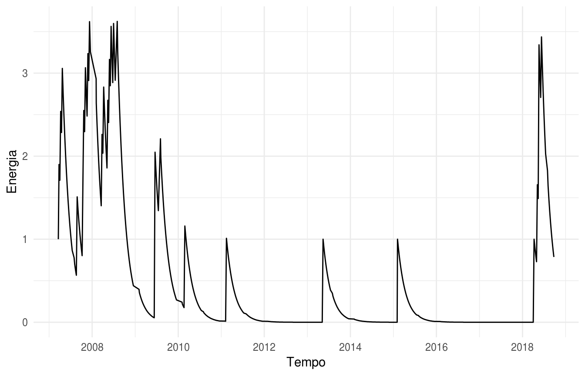
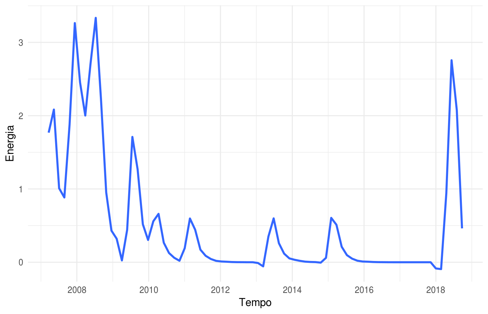
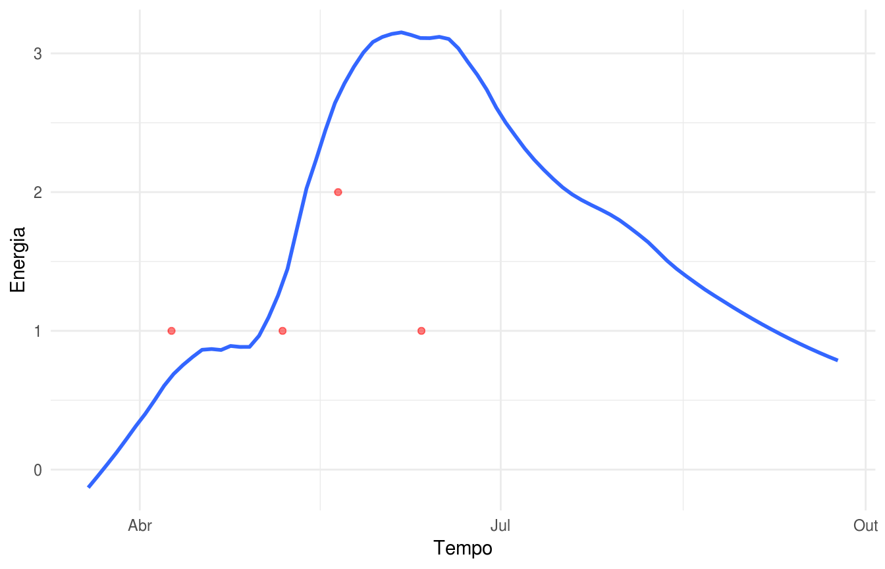

vignettes/tutorial_4_relatorio_energia.Rmd
tutorial_4_relatorio_energia.RmdA energia de uma proposição é um conceito criado com o objetivo de medir quão movimentada está a tramitação de um Projeto de Lei num determinado período, indicando quanto esforço tem sido empregado por atores do processo legislativo em avançar/barrar o projeto.
A energia de um PL pode ser calculada com diferentes granularidades/períodos (dia, semana, mês). Além disso, é possível escolher o tamanho da janela do histórico recente a ser considerado no cálculo (ex: os últimos 22 dias, ou as últimas 4 semanas). A energia de um período é definida como a quantidade de eventos ocorridos nesse período. A função de energia é dada pela fórmula:
\[e = \sum_{j=0}^{n} (v_j)\alpha^j\]
onde:
Vamos calcular a energia para um Projeto de Lei de exemplo.
Escolhemos o PL 490/2007, que trata da demarcação de terras indígenas. Vamos baixar os dados da proposição e da tramitação e em seguida reconhecer os eventos e fases, mostrando os últimos eventos ocorridos na tramitação do PL.
library(magrittr)
id <- 345311
casa <- 'camara'
prop <- agoradigital::fetch_proposicao(id,casa,TRUE)
tram <- agoradigital::fetch_tramitacao(id,casa,TRUE)
proc_tram <- agoradigital::process_proposicao(prop,tram,casa)
proc_tram %>%
dplyr::select(data_hora, texto_tramitacao, sigla_local, evento) %>%
utils::tail(6) %>%
DT::datatable(rownames = F, data = )Vamos calcular a energia recente para todo o histórico da tramitação do PL, agregando os eventos por semana e utilizando um decaimento de 10%. Os resultados podem ser vistos no gráfico abaixo.
Os pontos pretos representam os valores da energia recente calculada para cada semana.
hist_energia_semanal <- agoradigital::get_historico_energia_recente(proc_tram, granularidade = 's', decaimento = 0.1)
ggplot2::ggplot(hist_energia_semanal, ggplot2::aes(x=periodo, y=energia_recente)) +
ggplot2::xlab("Tempo") +
ggplot2::ylab("Energia") +
ggplot2::geom_point() +
ggplot2::theme_minimal()
Para ter uma visualização menos poluída, vamos mostrar uma linha, ao invés dos pontos.
hist_energia_semanal %>%
ggplot2::ggplot(ggplot2::aes(x=periodo, y=energia_recente)) +
ggplot2::geom_line() +
ggplot2::xlab("Tempo") +
ggplot2::ylab("Energia") +
ggplot2::theme_minimal()
Agora vamos aplicar uma suavização à curva de energia.
hist_energia_semanal %>%
ggplot2::ggplot(ggplot2::aes(x=periodo, y=energia_recente)) +
ggplot2::geom_smooth(span = .05, se = F) +
ggplot2::xlab("Tempo") +
ggplot2::ylab("Energia") +
ggplot2::theme_minimal()
Podemos também ter uma visualização mais detalhada, olhando apenas os últimos 3 meses (~ 12 semanas) da tramitação do PL, e mostrando a quantidade de eventos ocorridos a cada semana.
Os pontos vermelhos representam o número de eventos ocorridos em cada semana na qual houve eventos relevantes na tramitação do PL.
start_date <- dplyr::last(proc_tram$data_hora) - lubridate::days(90)
hist_energia_semanal_3_meses <- hist_energia_semanal %>%
dplyr::filter(periodo >= start_date)
hist_energia_semanal_3_meses %>%
ggplot2::ggplot(ggplot2::aes(x=periodo, y=energia_recente)) +
ggplot2::geom_smooth(span = .3, se = F) +
ggplot2::geom_point(ggplot2::aes(x=periodo, y=energia_periodo), colour='red', alpha=0.5, subset(hist_energia_semanal_3_meses, energia_periodo > 0)) +
ggplot2::xlab("Tempo") +
ggplot2::ylab("Energia") +
ggplot2::theme_minimal()